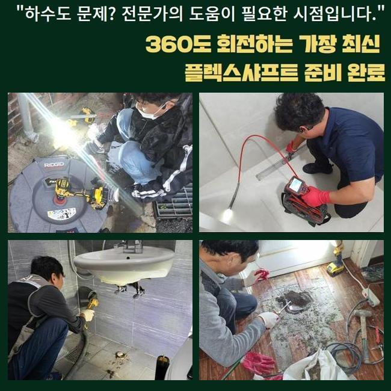
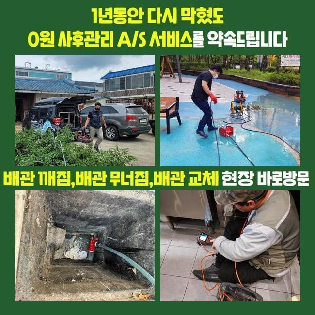
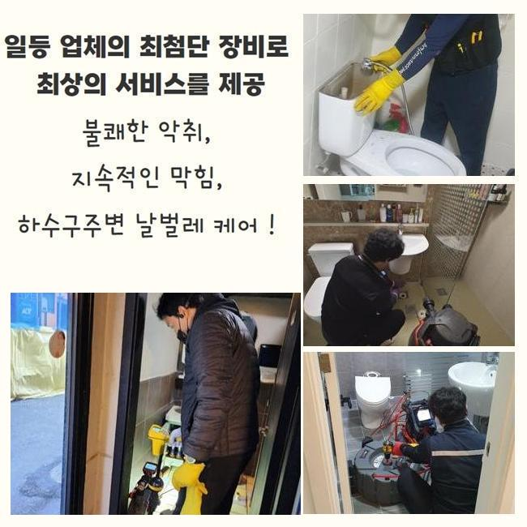
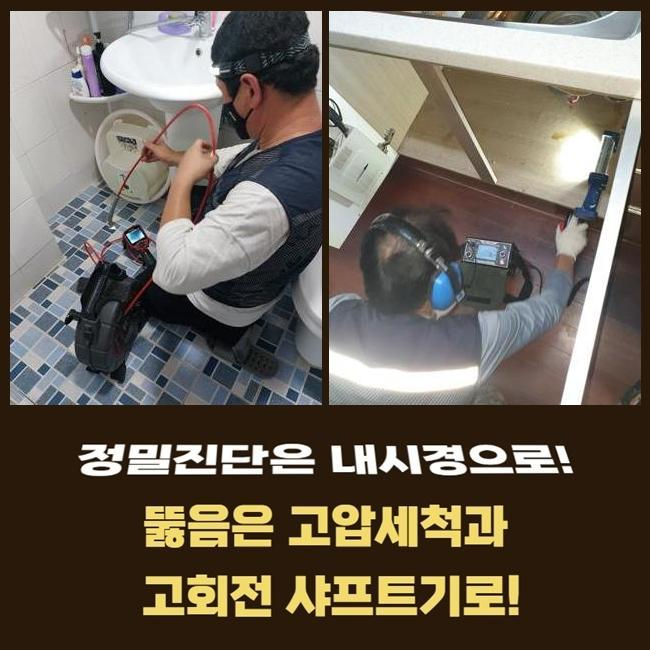
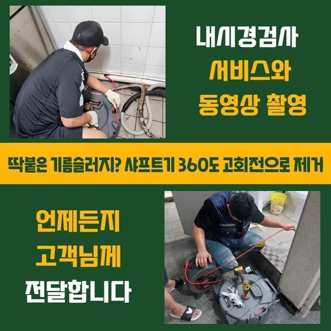
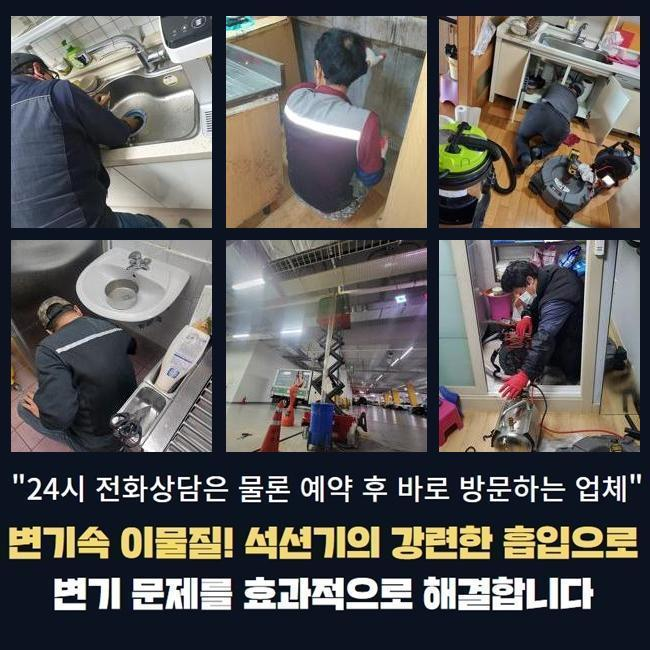

🏠 세마동씽크대뚫음 갈곶동 악취차단 누수공사
용인 갈곶동 싱크대막힘 전문 시공 후기

📋 작업 개요
- 위치: 용인 갈곶동, 갈곶동, 용인
- 서비스 유형: 싱크대막힘, 하수구막힘, 배관막힘, 맨홀막힘, 누수수리, 뚫는업체, 배관청소, 고압세척, 설비공사, 악취차단
- 작업 일시: 2025. 6. 2. 11:00
- 업체명: 하수구수사대 (010-5615-2118)
🔍 문제 상황
세마동씽크대뚫음 갈곶동 악취차단 누수공사
주방에서 주방쪽이 막히게되면 설거지등에 애로사항을 감당해야됩니다
식당의 경우 해당 증상들이 생기면 운영측면에도 부정적 영향들을 주는데요
그러므로 전문적이고 해결하는게 중요하죠
식당내부의 주방라인에서 배수들이 안되는 문제들이 나타났죠
주위의 식당에도 통수오류의 사태가 나타나게 되었습니다
해당 상황은 메인배수관에 원인들이 자리했을 가능성들을 배제할 수 없죠
그러므로 동일한 라인들을 쓰고있는 맨홀쪽의 진단도 진행되어야했던 상황이였죠
도착하자마자 먼저 주방 주방라인이 기능적 결함을 보이는것을 관찰할 수 있었습니다

🔎 원인 분석
💡 전문가 진단: 정밀 진단 장비를 사용하여 슬러지의 고착 여부를 판명하고 타격/세척 작업을 실시했습니다.
그로 인하여 통수들이 불가했던 모습이였고 올바른 작업이 필요했죠
하수도의 문제들은 이런저런 요소로 등장하는데 그 가운데 대표적인 원인들은 하수관이 오래되거나 이물들이 쌓이게되어 발생합니다
이러한 배수 정체는 보건성에도 좋지못한 악영향들을 미치므로 이에 알맞는 방식들을 꾀했어요
내시경기기를 배수관으로 집어넣고 상태들을 관찰하니 여기저기에 잔해물들이 자리한것을 인지했죠
내시경도구는 육안으로는 안보이는 하수관로를 관찰하는 장치로써 투입되는 줄을 하수도로 삽입하여 영상을 통해 안을 보여주는 기기에요
살펴보았더니 오염원들이 흐르질 않고 고인 모습이였죠
배수관이 노후되거나 구조상의 문제였다기보단 배수관으로 빠져나가던 잔재가 누적되어 배수를 힘들게 만든게 원인인것으로 판단되었습니다
씽크대배수로가 외부쪽이 이어져있는 상태로 자리하고 있어서 싱크대라인에서 등장한 이물들이 외부라인에 영향력들을 미친 상황이였죠
그 까닭을 파악하고 대대적으로 관로들을 조치해보고자 작업해주었어요
해당 작업에서 운용했던 장비의 경우 플렉스 샤프트라는 기계로 샤프트장비는 내측에서 원 운동을 하며 단단해진 것들을 제거하는 중점적인 기기에요

🔧 작업 과정
노커체인을 준비시켜주면 조리공간이 막힌 때에 오염물을 제거시키고 덧붙여 내식성에 대해서도 지켜내면서 수월하게 작업해줄 수 있어요
샤프트기계를 투입시켜 목표지점에 당도해 체인으로 오염원을 없애주었어요
다양한 잔재가 샤프트도구에 엉킨채로 배출되었습니다
뒤섞인 잔해물들을 관찰하니 예상한 바와 같이 싱크볼에서 흐른 음식쓰레기와 기름슬러지들이 대부분이였어요
수많은 현장 경험으로 미루어볼때 음식물의 잔해가 대다수였는데 가열된 제거된 뿌리의 잔재로서 씽크볼에서 흐르면서 정체를 일으키는 까닭이 된것입니다
이러한 잔해들은 녹지 않는 까닭에 배수관에서 정체되어 통수과정을 방해합니다
음식물쓰레기등과 기름성분들도 어마어마하게 제거되었는데 조리공간에서 쓰여지는 기름성분이 흘러나가며 중간중간에 고착된것이죠
기름들은 길목에서 조금씩 고착되며 벽쪽에 흡착되고 다른 음식쓰레기와 섞이게되어 더욱 빠르게 정체를 자아냅니다
기름의경우엔 날이갈수록 딱딱해지므로 간단한 방식으로 청소하기 힘든 경우들이 다수입니다
샤프트기계를 준비시켜 청소를 실시하고 석션장치를 써서 떨어져나간 부유물을 배출시켜 깔끔하게 마무리해주었어요
단단해진 기름덩어리들과 떨어져나온 오염물들도 정리해주고 배수관을 내시경기기로 체크하며 내측 컨디션을 관찰할 수 있었습니다
증상들은 잡혔고 밖의 하수관의 솟구치는 영향까지 말끔하게 잠재웠어요
작업 이후 고객께 주방의 하수관 관리들에 대한 유익한 내용들을 설명했어요
먼저 배수관에 잔해들을 걸러주지않고 배출시키지 않는게 도움이된다고 전해드렸어요
하물며 딱딱한 식재료나 기름들은 하수구 막힘의 원인들이 되기에 평상 시 잔해들을 씽크대로 배출시키기 전 따로 폐기해야한다고 말씀드렸죠
기름들은 바닥라인의 내부에서 흡착되어버려서 사용한 기름들은 주방타올로 닦아주고 세척하는게 추천드리는 방법입니다


✅ 작업 완료
갑작스러운 문제들을 막기위해선 계속해서 배관들을 청소해주고 필요하면 배수관 제품들을 사용하는게 이점으로 작용한다는것도 안내했죠
고객분은 저희의 설명을 들으신 뒤에 신경써서 관리측면을 소홀히 하지 않게 하실것을 얘기해주셨는데요
하수구 결함현상은 방치 시에 최초상태보다 심각해져서 선제적으로 조속히 대응해주는게 합리적이랍니다
작업이 순조롭게 진행되어 의뢰인의 불편들을 타파하여 한숨 돌릴 수 있었고 갑작스러운 배수정체를 막아내기 위한 적재적소의 점검실시가 동반해야할 것을 재차 전해드립니다



⚠️ 베란다 누수 및 방수 관리 방법
- ✅ 비가 많이 올 때 창틀 주변이나 아래층 천장에 얼룩이 생기는지 정기적으로 확인해 보세요.
- ✅ 우수관 주변 실리콘 마감이 들뜨거나 깨진 틈새가 있는지 손상 여부를 수시로 체크하세요.
- ✅ 베란다 바닥 타일의 줄눈(메지)이 소실되면 그 틈으로 물이 침투하여 누수가 유발됩니다.
- ✅ 누수 의심 증상 발견 시 방치하면 아래층 손실이 커지므로 즉시 전문가의 진단을 받으십시오.
💡 핵심 정리
- 확실한 장비 작업(내시경 점검 및 샤프트 스케일링)으로 원인을 뿌리 뽑습니다.
- 작업 후 1년 이내에 동일한 부위 재발 시 100% 무상 A/S 서비스를 보장합니다.
- 서울 · 경기 · 인천 전 지역에 24시간 언제든 긴급 출동할 수 있도록 항시 대기 중입니다.
❓ 자주 묻는 질문 (FAQ)
🚨 용인 갈곶동 싱크대막힘 문제로 고민이신가요?
정확한 원인 진단과 확실한 시공으로 재발 없는 해결을 약속드립니다.
24시간 긴급 출동 | 서울 · 경기 · 인천 전지역 | 1년 내 재발 시 무상 A/S